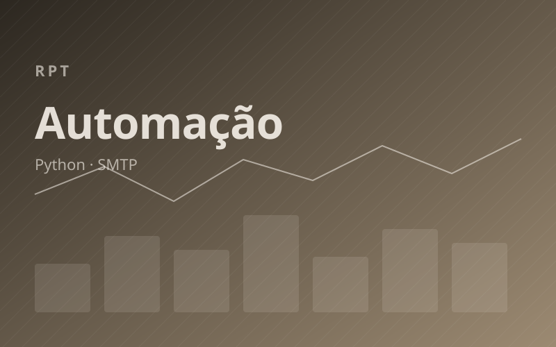
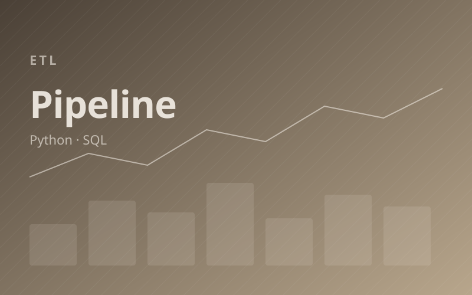
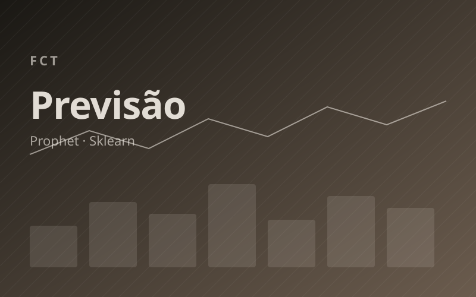
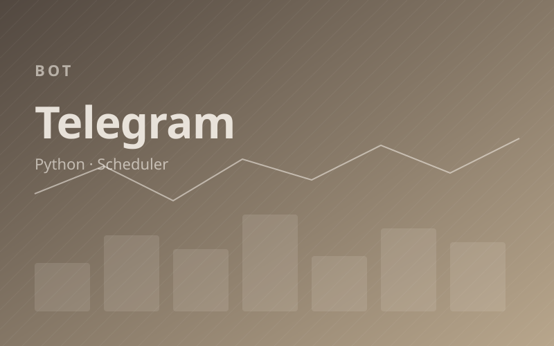
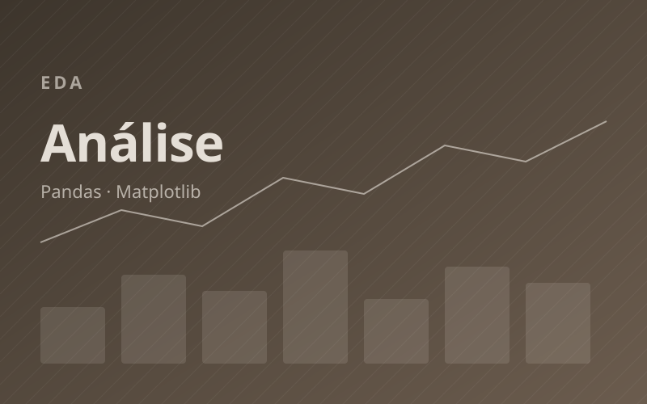

Destaque
Python · Profissional
Automação de Relatórios
Consolida planilhas, aplica regras de negócio e distribui PDFs por e-mail.
Categoria
Automações de processos, pipelines de ETL, análise exploratória e modelos preditivos focados em eficiência operacional.
Automações e análises entregues em ambiente corporativo.

DestaqueConsolida planilhas, aplica regras de negócio e distribui PDFs por e-mail.

Ingestão, transformação e carga em data warehouse com agendamento.

Modelo de séries temporais para planejamento de compras mensais.
Scripts e estudos abertos focados em produtividade e aprendizado.

Bot no Telegram que envia lembretes e resumos diários de tarefas.

Análise exploratória e visualização de bases abertas do governo.